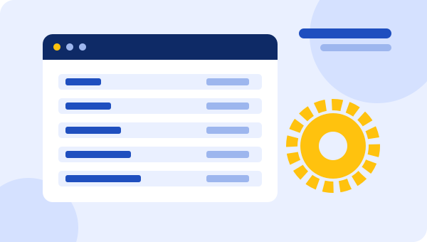
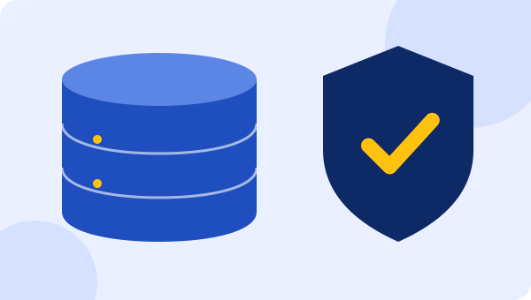
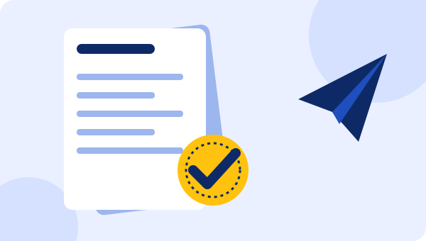

Внедрение, настройка и сопровождение 1С в Астане и по всему Казахстану
Настроим 1С под ваш бизнес, перенесём данные, подключим ЭСФ и отчётность, останемся на связи после запуска.
+7 707 300 00 93Подберём решение под ваши задачи
- 12лет опыта
- 33проекта выполнено
- 4направления услуг
- KZработаем удалённо по всему Казахстану
- 1 часответ на заявку в рабочее время
Как мы можем вам помочь

Подберём конфигурацию под ваш бизнес, настроим её, перенесём данные и обучим сотрудников. После запуска остаёмся на связи.
Подробнее об услуге
Берём на себя обновления, ошибки и вопросы пользователей, чтобы ваши сотрудники занимались работой, а не программой.
Подробнее об услуге
Работайте в 1С через интернет с любого компьютера или телефона. Не нужны сервер, администратор и ручные обновления.
Подробнее об услуге
Подключим электронные счета-фактуры, обмен документами и отчётность, чтобы всё отправлялось прямо из 1С.
Подробнее об услугеПочему выбирают нас
- 12 лет с 1СЗнаем типовые конфигурации и их слабые места.
- Цена и срок до начала работНазываем после аудита, без сюрпризов.
- Работаем удалённоПодключаемся к базе по всему Казахстану.
- Остаёмся после запускаОбновления, консультации и поддержка пользователей.
- Один подрядчик на всёОт установки до ЭСФ и отчётности.
Как мы работаем
- Заявка и короткий звонок
- Аудит задач и предложение
- Внедрение или настройка
- Обучение сотрудников
- Сопровождение
Отзывы клиентов
[ЗАМЕНИТЬ: 3 реальных отзыва с именем, компанией и результатом]
Частые вопросы
Сколько стоит внедрение 1С?
Зависит от конфигурации, числа пользователей и объёма доработок. После короткого аудита называем точную стоимость и срок.
Вы работаете за пределами Астаны?
Да, подключаемся удалённо и обслуживаем клиентов по всему Казахстану.
Можно ли перейти на 1С с Excel или другой программы?
Да. Переносим справочники, остатки и историю, перед загрузкой проверяем данные.
Что делать, если 1С работает медленно?
Проведём диагностику базы и СУБД, назовём причину и исправим. Часто помогает оптимизация без смены оборудования.
Как быстро вы отвечаете?
В рабочее время в течение часа. Срочные вопросы по абонентскому обслуживанию решаем в течение дня.
Расскажите о задаче, и мы предложим решение
Консультация бесплатная. Ответим в рабочее время в течение часа.
Оставить заявку Позвонить +7 707 300 00 93